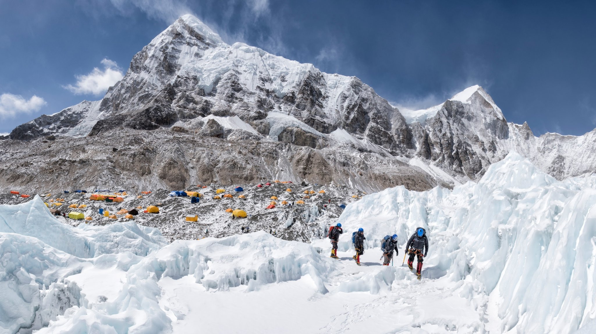

RARA Lake
Jumla offers the best scenery on the north-western most side of Nepal. Rara Lake lies at an altitude above 2,990 meters (9,810 ft) above sea level covers an area of 10.8 km2 (4.2 sq mi).The lake having a length of 5 kilometers (3.1 mi) and a width of 3 kilometers (1.9 mi) has a maximum depth of 167 meters (548 ft). It flows into the Mugu Karnali River via the Nijar River (Nijar Khola). The morphology, physics, chemistry and biology measure high pH, conductivity and total hardness. The lake was report to be very slightly polluted and was classified as oligotrophic in limnological terms.
Learn More
Muktinath
Muktinath travel guide going to introduce you where is Muktinath temple located? Best time to visit Muktinath including Muktinath tour packages and cost. Sacred Muktinath Mandir situated at an altitude of 3710 meters above sea level in Mustang district Nepal. Muktinath temple is a very famous holy shrine of both Hindus & Buddhists of the world. This temple located on the route of famous Annapurna circuit trek just below the mountains Thorong-La Pass
Learn More
Everestbc
The trek to Everest Base Camp is the most famous multi-day adventure hike in the world for a reason. Taking you into the heart of the Himalayas, the route winds its way up to 5,643m above sea level, offering you unparalleled views of the world’s highest mountain. Along the way, you’ll be immersed in Sherpa culture, soaking up the sounds and sights of the Khumbu region, and creating memories that will last a lifetime
Learn More
Upper mustang
Upper Mustang is an arid river valley lying near the Annapurna Circuit in the rain shadow region of the Himalayas. In the past, this valley was a forbidden kingdom within Nepal. Due to decades of isolation from the world, it developed its own tradition and culture, which closely resembles the Tibetan culture. Currently, Upper Mustang forms a prime trek destination due to its unique desert-like terrain, its unique history, and culture.
Learn More